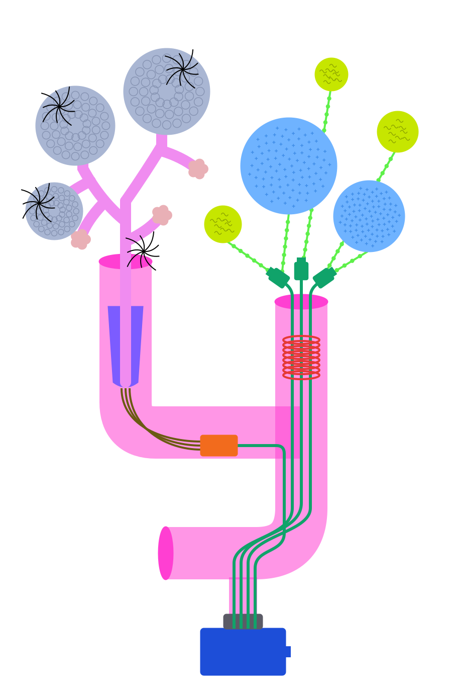
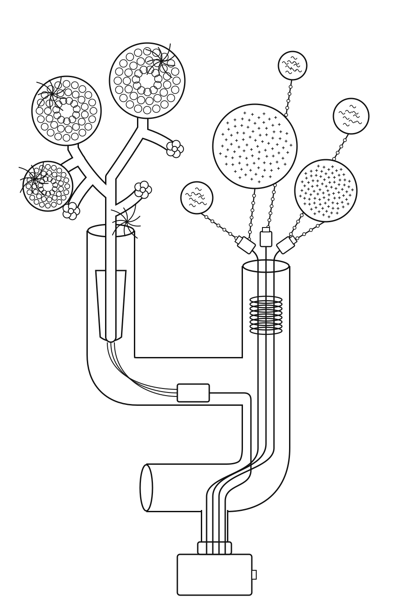
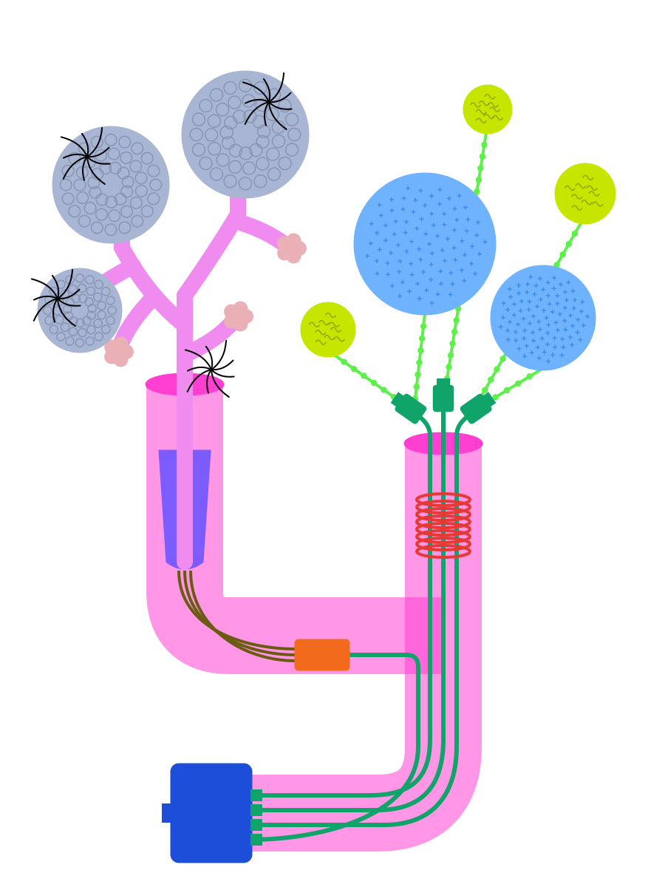
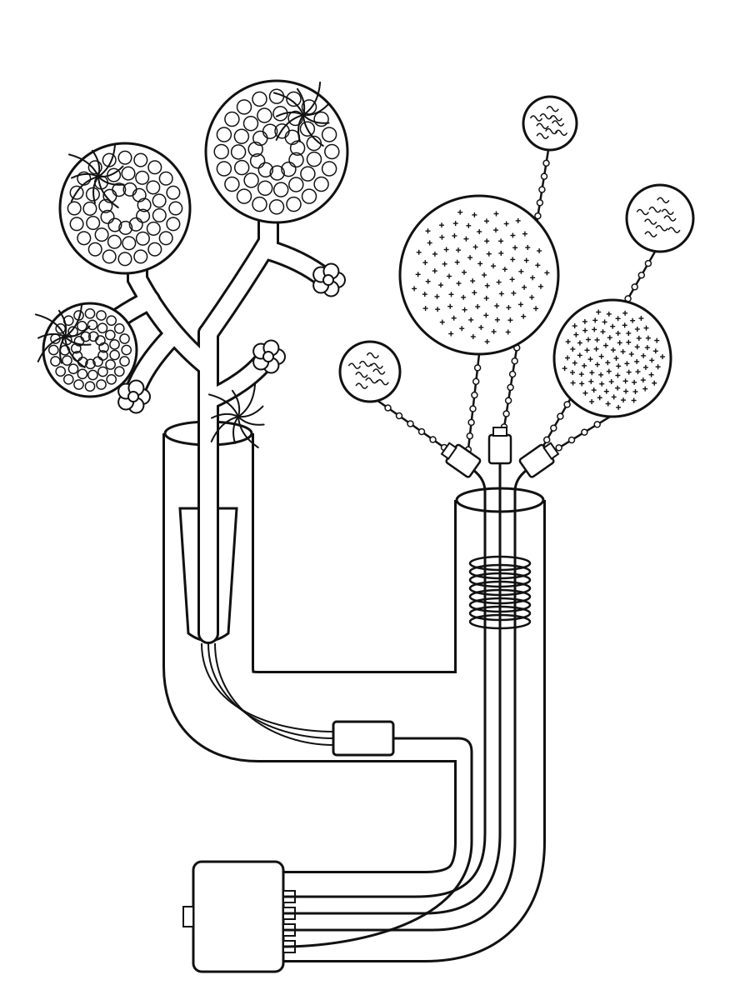
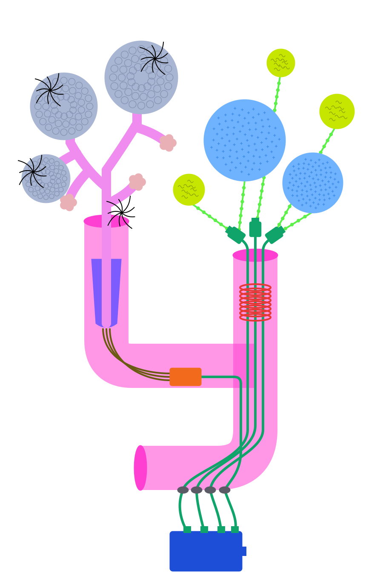

1. Short branch down
Tinted stub drops into the box. Grey rubber collar seals it.

2. Box caps the open end
Box plugs the bottom left mouth. Cables feed straight in.

3. Grommets in the wall
Box sits outside. Cables loop up into grey rubber grommets.